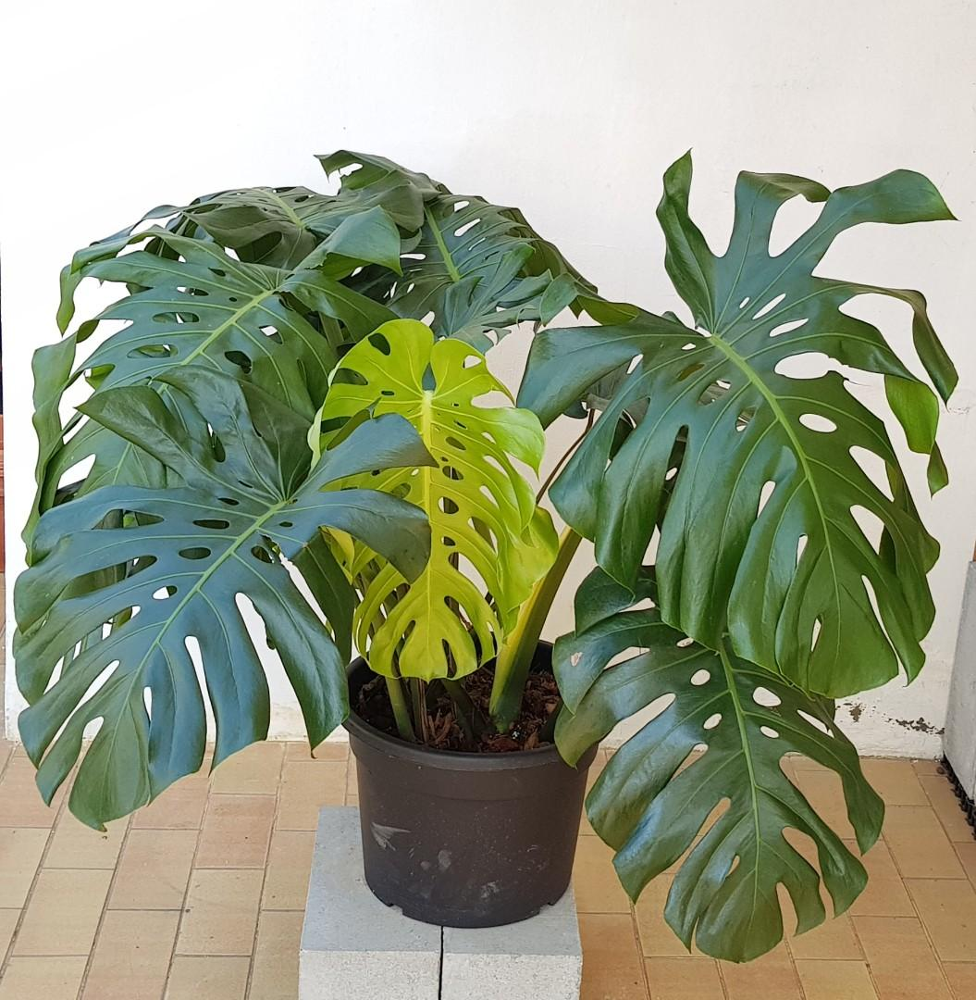
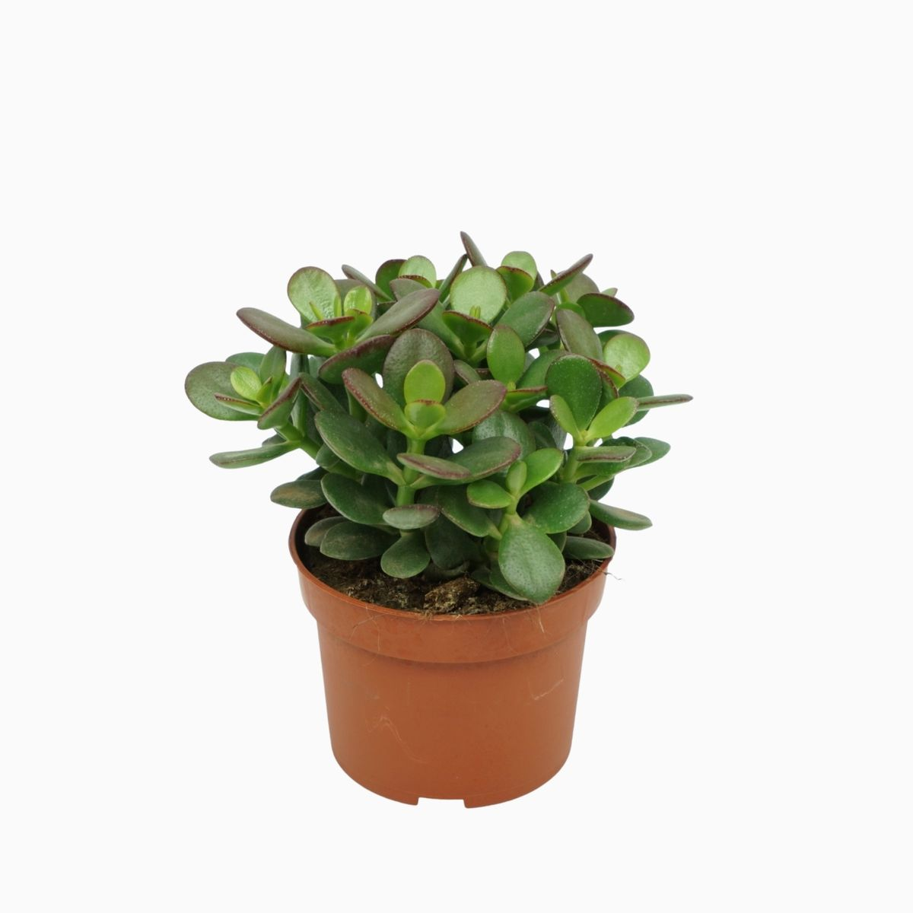
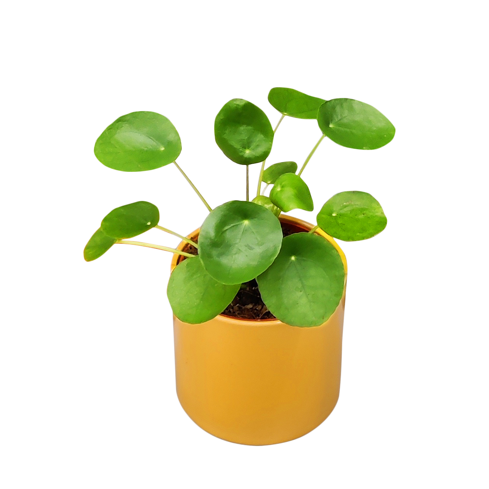
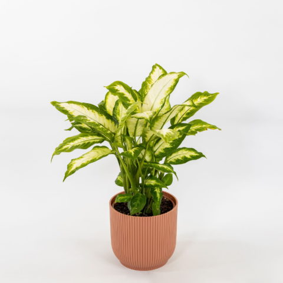
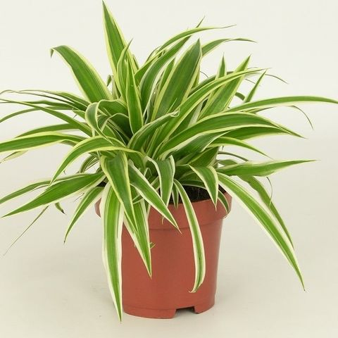

|  | |
| Origine: Messico | |
| La Monstera deliciosa è una pianta sempreverde e rampicante della famiglia delle Araceae diffusa nella zona compresa dal Messico al Canale di Panama. Può crescere in altezza fino ai 20 metri. |
|
| Prezzo: 50€ | |
| Quantità disponibile: 2 |
|  | |
| Origine: Mozambico | |
| La Crassula ovata, comunemente chiamata albero di Giada è una pianta succulenta della famiglia Crassulaceae. | |
| Prezzo: 4€ | |
| Quantità disponibile: 4 |
|  | |
| Origine: Cina | |
| La Pilea peperomioides nota pure come pianta cinese del denaro, è una pianta di foglie rotonde di 10cm di diametro in un lungo picciolo. |
|
| Prezzo: 7€ | |
| Quantità disponibile: 8 |
|  | |
| Origine: Messico | |
| La Diffenbachia seguine è una especie di pianta sempreverde della famiglia Araceae. Raggiunge un'altezza compresa tra 1 e 3 metri. È caratterizzata da un fusto carnoso e eretto, dove si sviluppano lunghi piccioli che si estendono in un diametro fino a 60 cm. |
|
| Prezzo: 20€ | |
| Quantità disponibile: 64 |
|  | |
| Origine: Sudafrica | |
| La Chlorophytum comosum è una pianta sempreverde con foglie lunghe e sottili che si sviluppano da un fusto carnoso. Riesce a estendersi fino a 60 cm di diametro, creando un aspetto lussureggiante. |
|
| Prezzo: 4.99€ | |
| Quantità disponibile: 512 |